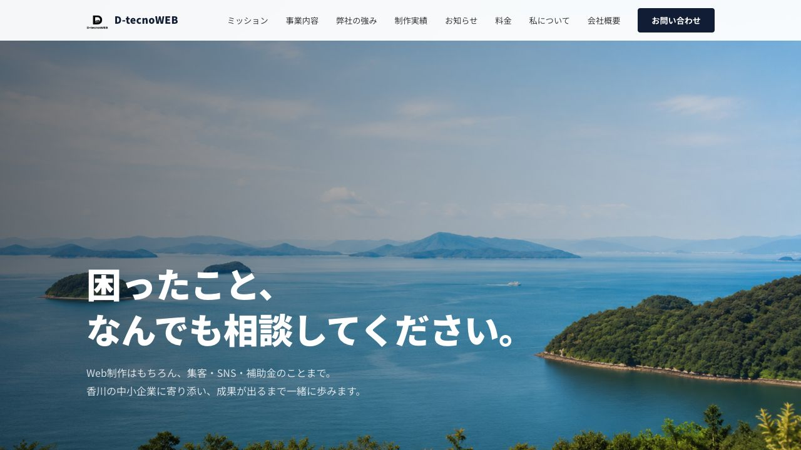

見つけやすさ
店名や地域名で探したときに、正しい情報へたどり着けるか確認します。
小さなお店・地域団体向け
サイト、Googleマップ、Instagram。いろいろ更新しているうちに、どこから直せばよいか分からなくなっていませんか。現在の発信をお客様の目線で確認し、優先したい改善点をPDFにまとめます。
モニター価格 3,300円（税込）／先着3件／納品目安3営業日

店名や地域名で探したときに、正しい情報へたどり着けるか確認します。
営業時間、場所、商品・活動内容、写真が迷わず理解できるか見ます。
電話、予約、問い合わせへ無理なく進める状態か整理します。
飲食店、食品店、家族経営の店舗、生活サービス業など。
保存会、獅子組、地域活動など、参加者募集や情報整理が必要な団体。
サイト制作を決める前に、現在の問題を整理したい方。
お申し込み
内容を確認してから、診断できる範囲とお支払い方法をご案内します。この段階でサイト制作を契約する必要はありません。
はい。GoogleマップやInstagramだけでも確認できます。
必要ありません。自分で直せる内容も分けてお伝えします。
順位や売上の増加を保証するサービスではありません。現在の発信でお客様が迷いやすい部分を整理します。
ありません。公開されている情報を確認します。代理ログインや口コミ操作も行いません。